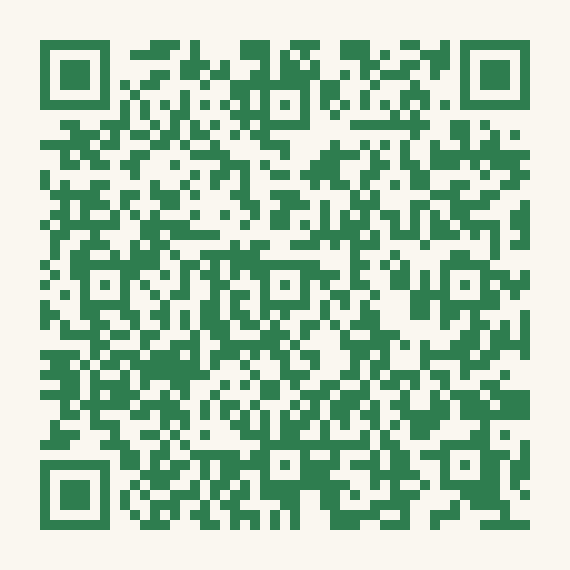

Point your phone's camera at the code. Seven commitments, about a minute.

aigovops-foundation.github.io/aigovops-ncw-ai-camp/pledge.html
Nothing to fill in. We never learn who signed.
Print this page for a table tent or poster, or use
assets/img/pledge-qr.png on a slide.
Regenerate with python3 scripts/make-qr.py if the pledge URL ever moves —
and scan the result with a real phone before printing a hundred of them.